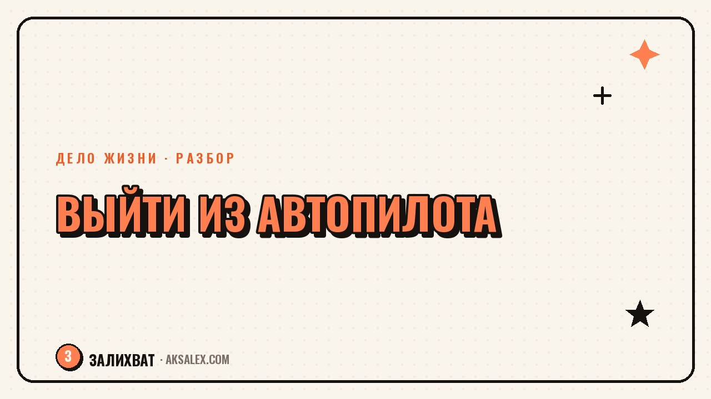

Как перестать жить на автопилоте и вернуть смысл в будни

Утро, работа, дорога домой, телефон, сон - и вот уже пятница незаметно превратилась в следующую пятницу. Жизнь на автопилоте не выглядит как кризис: ты вроде справляешься со всем, ничего катастрофического не происходит, просто дни стали одинаковыми до оскомины, а вечером ты не можешь вспомнить, что в этом дне было твоим, а не просто выполнением программы. Разберём, откуда берётся это состояние и что реально помогает из него выйти, без резких решений уволиться и уехать на остров.
Как понять, что ты живёшь на автопилоте
Автопилот - это не лень и не депрессия, хотя граничит с обоими состояниями. Это режим, в котором мозг экономит энергию на принятии решений: он уже знает, что ты будешь делать в 8 утра, в обед и вечером, поэтому перестаёт спрашивать, хочешь ли ты этого. Удобно для выживания, но со временем стирает ощущение, что день принадлежит тебе.
Признаки узнаются легко, если остановиться и честно на себя посмотреть. Ты не можешь вспомнить, что делал в прошлую среду, хотя она была совсем недавно. Выходные нужны не для того, чтобы что-то сделать, а чтобы просто пережить следующую неделю. На вопрос 'как дела' отвечаешь 'нормально', потому что любой другой ответ требует подумать, а думать уже не хочется.
Чем автопилот отличается от обычной усталости
Усталость проходит после отдыха, автопилот - нет. Можно отлично выспаться в отпуске и вернуться в те же рельсы на второй рабочий день. Это сигнал, что дело не в количестве сна, а в структуре будней, которая не оставляет места для выбора.
Почему так происходит: не лень, а экономия ресурса
Мозг не враг тебе - он действует рационально. Если каждое решение в течение дня принимать осознанно, ресурс закончится к обеду. Поэтому рутинные действия уходят в автоматизм: это нормально и даже полезно для простых задач вроде варки кофе. Проблема начинается, когда в автоматизм уходит всё, включая то, что должно приносить радость или смысл.
Часто автопилот усиливается после периода, когда пришлось много на себя взвалить - новая работа, ребёнок, переезд, уход за родителем. Тогда мозг включает режим выживания и держит его дольше, чем нужно, просто по инерции: тревога давно прошла, а привычка жить на автомате осталась.
Автопилот - это не характер и не диагноз. Это настройка, в которую мозг переходит, чтобы экономить силы, и которую можно переключить обратно, если заметить и начать действовать не резко, а постепенно.
Что реально помогает: маленькие точки выбора
Большая ошибка - пытаться вернуть смысл сразу во всю жизнь: уволиться, переехать, поменять всё одним махом. Так делают от отчаяния, и чаще всего это заканчивается новым автопилотом, только в других декорациях. Работает другой подход - вернуть себе выбор в маленьких, конкретных точках дня.
- Выбери один ритуал в день, который делаешь осознанно, а не на автомате - например, первые 10 минут утра без телефона
- Раз в неделю меняй маршрут или способ делать привычное дело
- Задавай себе вопрос 'я хочу это делать или просто делаю' хотя бы один раз в день
- Веди короткие заметки вечером: что в этом дне было твоим решением, а что - инерцией
- Раз в месяц выделяй час для вопроса 'что я хочу изменить в ближайшие три месяца'
Почему маленькие шаги работают лучше резких решений
Маленький выбор тренирует ту же мышцу, что и большой - способность замечать момент решения, а не проскальзывать мимо него. Когда эта мышца привыкает работать на мелких задачах, становится проще заметить и крупные развилки в жизни, которые раньше проходили мимо на автомате.
Роль нейросетей: инструмент для разбора, а не решение
Нейросеть не вытащит тебя из автопилота сама, но может стать удобным зеркалом для разбора. Опиши свой типичный день по часам и попроси нейросеть задать вопросы о том, где в этом дне были твои решения, а где - чистая инерция. Иногда посмотреть на свой день со стороны, даже в формате диалога с ботом, помогает увидеть то, что не замечаешь внутри привычного ритма.
Полезно также вести диалог с нейросетью в формате вечерней рефлексии: коротко описывать день и просить задавать один уточняющий вопрос, а не давать готовые советы. Это тренирует привычку останавливаться и оглядываться, а не просто катиться по рельсам до следующего дня.
| Инструмент | Для чего годится | Чего не заменит |
|---|---|---|
| Дневник заметок вечером | Заметить, что было выбором, а что инерцией | Не решит проблему сам по себе |
| Диалог с нейросетью | Задать вопросы о своём дне со стороны | Не даёт готовых жизненных решений |
| Смена маршрута или ритуала | Включает внимание и выбор | Не меняет всю структуру жизни резко |
| Разговор с психологом | Разобрать глубокие причины автопилота | Нейросеть здесь не замена специалисту |
Когда автопилот - это сигнал о более глубокой проблеме
Если за ощущением однообразия стоит не просто усталость от рутины, а подавленность, апатия, потеря интереса к вещам, которые раньше радовали, и это длится больше пары месяцев - это уже не про организацию дня, а про состояние, с которым стоит идти к психологу или психотерапевту. Автопилот и депрессия иногда выглядят похоже снаружи, но работать с ними нужно по-разному.
Маленькие шаги из этой статьи хорошо работают, когда база в целом в порядке и просто нужно встряхнуть устоявшийся ритм. Если же внутри давно пусто и ничего не хочется даже пробовать - это повод не винить себя за недостаток дисциплины, а обратиться за поддержкой к специалисту, который разберётся в причинах глубже, чем это можно сделать самостоятельно.
Частые вопросы
Как понять, что я живу на автопилоте, а не просто устал?
Усталость проходит после отдыха, а автопилот нет - можно выспаться и вернуться в те же рельсы на следующий день. Главный признак - не помнишь, что было в прошлые дни, и выходные нужны только чтобы пережить неделю, а не чтобы что-то сделать для себя.
Как вернуть смысл в будни без резких решений уволиться или переехать?
Начни с маленьких точек выбора в течение дня - осознанный ритуал утром, смена привычного маршрута, вопрос себе 'я хочу это делать или просто делаю'. Резкие перемены от отчаяния часто заканчиваются новым автопилотом в других декорациях.
Может ли нейросеть помочь выйти из состояния автопилота?
Нейросеть может стать удобным инструментом для разбора дня - задать вопросы о том, где были твои решения, а где инерция. Но сама проблему она не решает, это инструмент для рефлексии, а не замена действиям или при необходимости специалисту.
Чем автопилот отличается от депрессии?
Автопилот - это экономия ресурса мозгом при нормальной в целом жизни, он снимается постепенным возвращением выбора в день. Если же присутствует стойкая апатия и потеря интереса ко всему дольше пары месяцев, это повод обратиться к психологу, а не просто менять распорядок дня.
Сколько времени нужно, чтобы выйти из жизни на автопилоте?
Точных сроков нет, это зависит от того, как долго формировалась привычка и сколько внешних факторов её поддерживают. Маленькие ежедневные точки выбора начинают давать ощутимый эффект через несколько недель регулярной практики, а не за один вечер.
Раз тема оказалась полезной, вот что почитать следующим. Нейросети на даче: план посадок, разбор болезней растений и расчёт урожая без лишней магии.
Читать статью →а не вручную